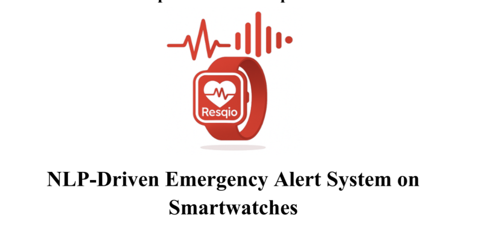

Graduation Project – NLP-Based Emergency Detection System

NLP-Driven Emergency Alert System on Smartwatches
Developed an NLP-based emergency detection system for smartwatches.
The system analyzes voice input and classifies emergency types using Natural Language Processing techniques.
Collected and labeled emergency-related text data
Preprocessed Arabic and English datasets
Trained and evaluated text classification models
Improved performance using feature engineering techniques